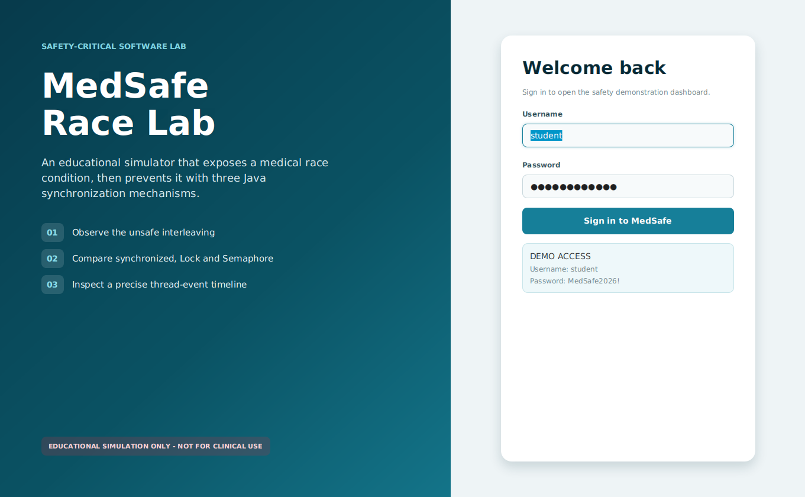
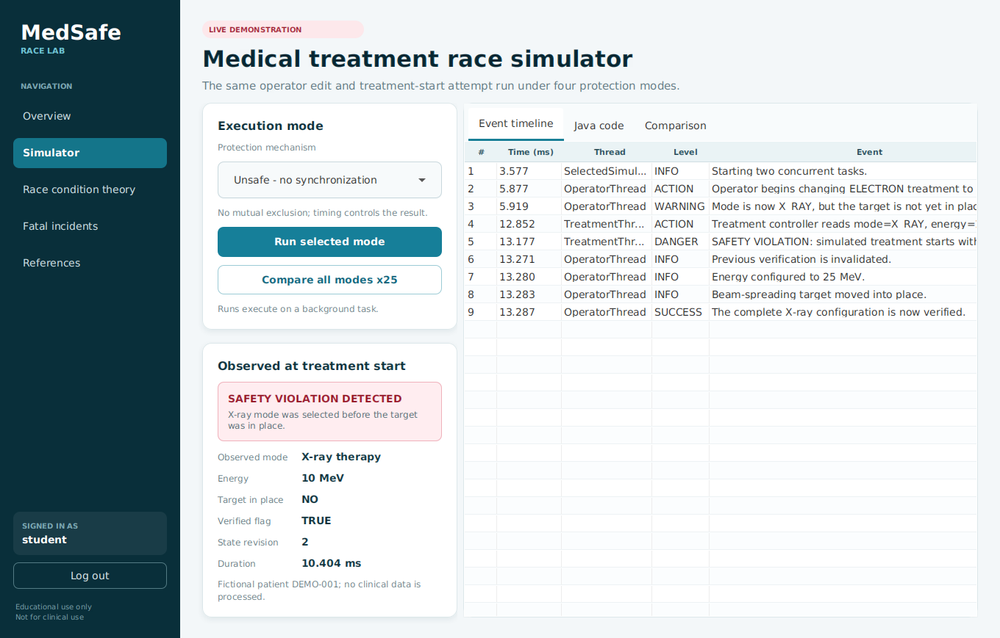

A safety-critical race condition in a fictional radiation-therapy controller, shown next to three Java fixes. The real project is a JavaFX desktop app with JUnit tests; this page replays the same scenario step by step.
Educational simulation only. Never use for diagnosis, treatment or dosage.
The treatment must only start from a complete, verified configuration: X-ray mode needs the beam-spreading target in place, and electron mode needs it out of the beam path. The operator thread changes several fields one after another. Without a guard, the treatment thread can read the state in the middle of that update – mode already X_RAY, target still out, old verification still true.
The corrected modes make the operator's update and the treatment check mutually exclusive, so the treatment thread simply waits for the full update to finish.
| Mode | Controlled runs | Violations |
|---|---|---|
| Unsafe | 25 | 25 |
synchronized | 25 | 0 |
ReentrantLock | 25 | 0 |
Semaphore(1) | 25 | 0 |
A latch positions both threads at the dangerous boundary so the unsafe run is repeatable on stage; it does not protect the shared state.

